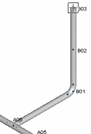
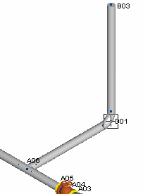
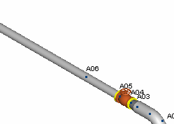
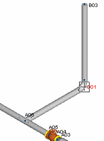
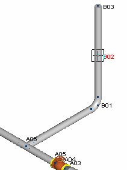
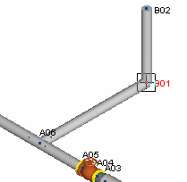
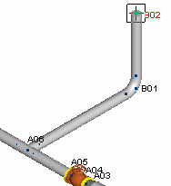
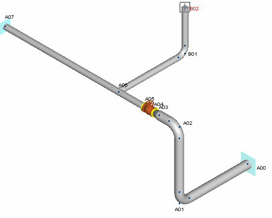

.png) Select Insert > Piping
Components > Run.
Select Insert > Piping
Components > Run.
- Press OK to accept the defaults and create a new run point 6 feet {2000mm} from B02 in the
+Y direction. The model appears as shown in the following figure.

- Since a straight pipe run exists between B01 and B03, you really don’t need point B02. Select
point B02 to make it active, then delete the point using one of the following methods:
-
- Select the Delete > Piping Components > Run.
- Press the Delete key on the keyboard.
- A confirmation dialog is displayed. Press Yes to delete the point. The model appears as shown in the following figure.

- Now let’s delete the entire segment. Ensure that Segment B is displayed in the status bar, and then select Delete > Piping Components > Segment. When the confirmation dialog appears, press Yes to remove it. The model appears as shown in the following figure.

.png) 7. Because AutoPIPE retains a
history of the commands you have performed, you can choose to Undo
or Redo certain actions. For example, select Home >
Clipboard > Undo. The deleted segment is restored as
shown in the following figure.
7. Because AutoPIPE retains a
history of the commands you have performed, you can choose to Undo
or Redo certain actions. For example, select Home >
Clipboard > Undo. The deleted segment is restored as
shown in the following figure.

8. Select Home > Clipboard > Undo again and the intermediate point B02 is restored as shown in the following figure

.png) 9. Select Home >
Clipboard > Undo twice more to remove point B03, then
to undo the Convert to Bend command we performed earlier. The model
appears as shown in the following figure.
9. Select Home >
Clipboard > Undo twice more to remove point B03, then
to undo the Convert to Bend command we performed earlier. The model
appears as shown in the following figure.

- Select Home > Clipboard > Redo to re-convert the point to an elbow. The graphic appears as shown in the following figure.

- Select View > Zoom-Pan > Zoom Extents to view the extents of the model as shown in the following figure.
